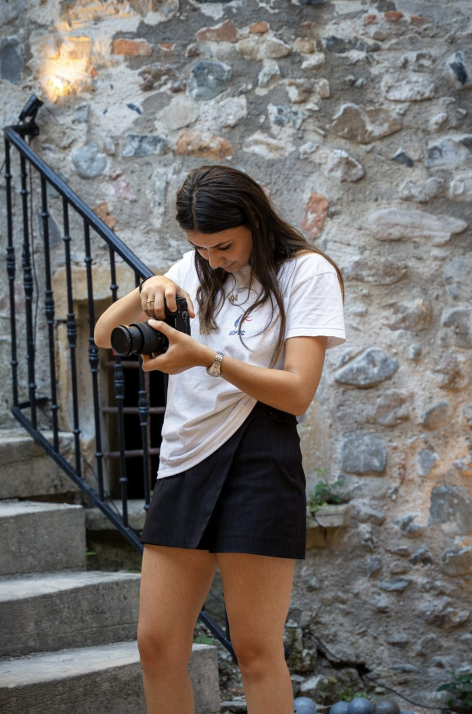

À PROPOS
Réalisatrice · Vidéaste · Photographe
FRANCE · INTERNATIONAL

LE PARCOURS
Je suis réalisatrice et créatrice audiovisuelle indépendante.
J'aime imaginer des concepts, donner vie aux idées et surtout raconter des histoires. Qu'il s'agisse d'un film, d'une interview, d'un événement ou d'un projet imaginé spécialement pour une personne, je cherche toujours la manière la plus juste de transmettre une histoire et de créer une émotion.
Titulaire d'un Master en réalisation audiovisuelle, je travaille sur toutes les étapes d'un projet : de l'idée à l'écriture, du tournage au montage, jusqu'à la livraison finale.
Et lorsque le projet prend une autre dimension, je peux également m'entourer d'une équipe adaptée pour donner vie à l'idée dans les meilleures conditions.
L'APPROCHE
Chaque projet commence par une écoute.
Comprendre ce que vous voulez raconter, pourquoi vous souhaitez le raconter et surtout ce que vous voulez faire ressentir.
Je conçois ensuite le projet avec vous : concept, écriture, réalisation, image, montage… Chaque choix est pensé pour servir l'histoire.
Mon univers se nourrit de ce qui m'entoure : mes voyages, ma culture, les personnes que je rencontre et les passions qui m'accompagnent au quotidien.
Je ne cherche pas à appliquer une recette à chaque projet.
Je cherche la bonne façon de raconter celui-ci.
L'ESSENTIEL
Un bon projet commence rarement par une caméra.
Il commence par une discussion, une idée, une rencontre ou parfois simplement une envie de raconter quelque chose.
Mon rôle est de transformer cette envie en images, tout en restant à l'écoute des personnes qui me confient leur histoire.
Imaginer. Raconter. Créer.